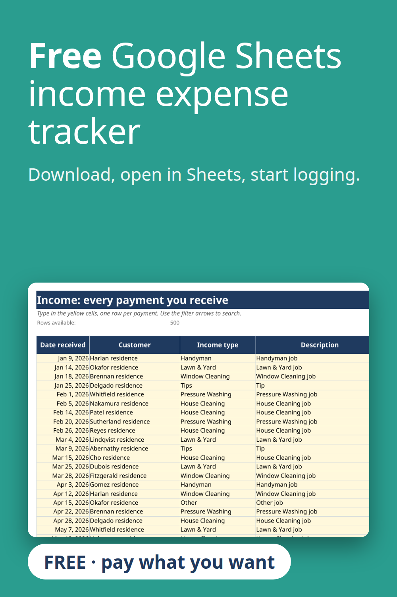

A free Google Sheets income and expense tracker template. Upload the file to Google Drive and open it with Google Sheets, or use it in Excel. Dropdown categories you can rename, a monthly summary and charts. Made for freelancers and small service businesses. Pay what you want, even $0.
Get the free tracker on Gumroad
Built with the help of AI tools, then tested: every report number was recalculated separately.